Grade 6 — Ratios and integers
Rate, negative numbers and expressions. This guide contains 60 chapter-level worked lessons, review questions, answers, and linked illustrations.
Contents — select a chapter
Negative integers
Integers include whole numbers, their negatives, and zero.
−3 + 7 = 4.
- Start at −3
- Move seven units right
- End at 4.
(-8) + 13
Hint: Opposite signs: subtract magnitudes.
Show answer and verify
5
Check the units, inputs and intermediate steps. Different solution methods may be valid.
Integer multiplication
Two like signs produce positive; unlike signs produce negative.
−4 × −5 = +20.
- Two negative signs cancel
- Multiply magnitudes 4×5.
(-7)*6
Hint: Different signs give negative.
Show answer and verify
-42
Check the units, inputs and intermediate steps. Different solution methods may be valid.
Ratios
A ratio compares two quantities multiplicatively.
4 red to 6 blue simplifies to 2:3.
- Divide both sides by 2
- Keep order fixed.
Simplify ratio 18:12. Enter first part.
Hint: Divide both values by 6.
Show answer and verify
3
Check the units, inputs and intermediate steps. Different solution methods may be valid.
Unit rates
Divide to find an amount per one unit.
180 miles in 3 hours = 60 mph.
- Divide 180 by 3
- Label miles/hour.
250 miles in 5 hours. What is mph?
Hint: Distance divided by time.
Show answer and verify
50
Check the units, inputs and intermediate steps. Different solution methods may be valid.
Percent of a number
Percent means per 100; convert percent to decimal and multiply.
15% of 80 = 12.
- 15% = 0.15
- Multiply 0.15×80.
20% of 75
Hint: 0.2 × 75.
Show answer and verify
15
Check the units, inputs and intermediate steps. Different solution methods may be valid.
Greatest common divisor
GCD identifies the largest factor shared by integers.
gcd(24,36) = 12.
- Factors of 24 include 12
- 36 is divisible by 12
- No larger common factor.
gcd(42,56)
Hint: Use prime factors or Euclidundefineds algorithm.
Show answer and verify
14
Check the units, inputs and intermediate steps. Different solution methods may be valid.
Evaluate expressions
Substitute assigned variable values into an algebraic expression.
3x + 2 at x=4 is 14.
- Replace x by 4
- Multiply 3×4
- Add two.
Find 5x - 3 when x=6.
Hint: Replace x with six.
Show answer and verify
27
Check the units, inputs and intermediate steps. Different solution methods may be valid.
Solve one-step equations
Isolate x using the inverse operation on both sides.
x + 9 = 22, so x=13.
- Subtract 9 from each side
- Check 13 + 9 = 22.
Solve x/4 = 7. Enter x.
Hint: Multiply both sides by four.
Show answer and verify
28
Check the units, inputs and intermediate steps. Different solution methods may be valid.
Coordinate quadrants
Signs of ordered pairs determine the plane quadrant.
(−2,3) lies in Quadrant II.
- x negative: left
- y positive: up
- Quadrant II.
What quadrant contains (3, −4)? Enter its number.
Hint: Right and down is quadrant four.
Show answer and verify
4
Check the units, inputs and intermediate steps. Different solution methods may be valid.
Surface area
Surface area totals all exterior face areas.
2×3×4 prism: 2(6+8+12)=52.
- Find the three distinct rectangular faces
- Double each pair.
Find surface area of cube with side 3.
Hint: Six square faces; each 9.
Show answer and verify
54
Check the units, inputs and intermediate steps. Different solution methods may be valid.
Opposites and signed numbers
Opposites and signed numbers: Use a signed number line and preserve sign rules when adding or multiplying. A negative product results from one positive and one negative factor.
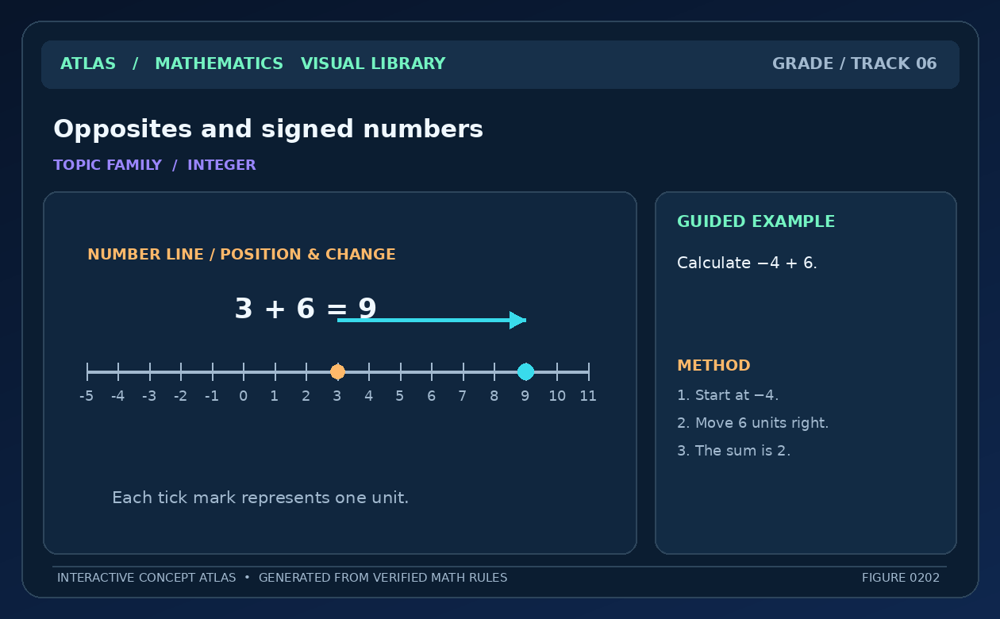
Calculate −4 + 6.
- Start at −4.
- Move 6 units right.
- The sum is 2.
Calculate −8 + 6.
Hint: Start at the negative number and move right.
Show answer and verify
-2
Check the units, inputs and intermediate steps. Different solution methods may be valid.
Ordering negative integers
Ordering negative integers: Use a signed number line and preserve sign rules when adding or multiplying. A negative product results from one positive and one negative factor.
Calculate −3 + 3.
- Start at −3.
- Move 3 units right.
- The sum is 0.
Calculate −10 + 3.
Hint: Start at the negative number and move right.
Show answer and verify
-7
Check the units, inputs and intermediate steps. Different solution methods may be valid.
Number lines with negatives
Number lines with negatives: Use a signed number line and preserve sign rules when adding or multiplying. A negative product results from one positive and one negative factor.
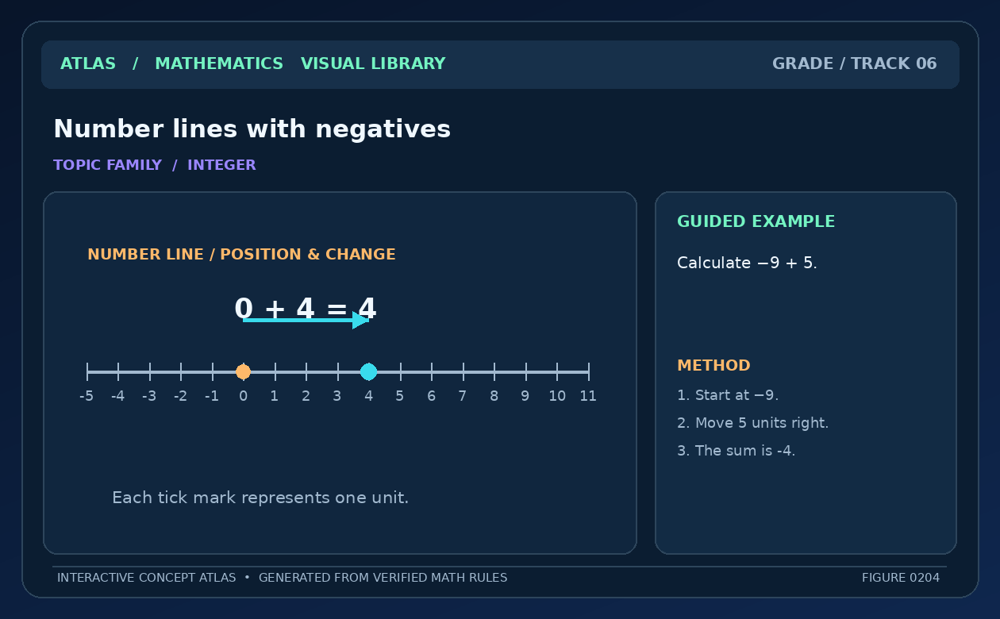
Calculate −9 + 5.
- Start at −9.
- Move 5 units right.
- The sum is -4.
Calculate −16 + 5.
Hint: Start at the negative number and move right.
Show answer and verify
-11
Check the units, inputs and intermediate steps. Different solution methods may be valid.
Absolute value
Absolute value: Use a signed number line and preserve sign rules when adding or multiplying. A negative product results from one positive and one negative factor.
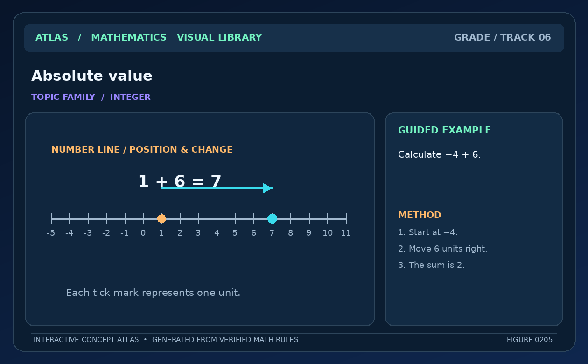
Calculate −4 + 6.
- Start at −4.
- Move 6 units right.
- The sum is 2.
Calculate −5 + 6.
Hint: Start at the negative number and move right.
Show answer and verify
1
Check the units, inputs and intermediate steps. Different solution methods may be valid.
Addition of signed numbers
Addition of signed numbers: Use a signed number line and preserve sign rules when adding or multiplying. A negative product results from one positive and one negative factor.
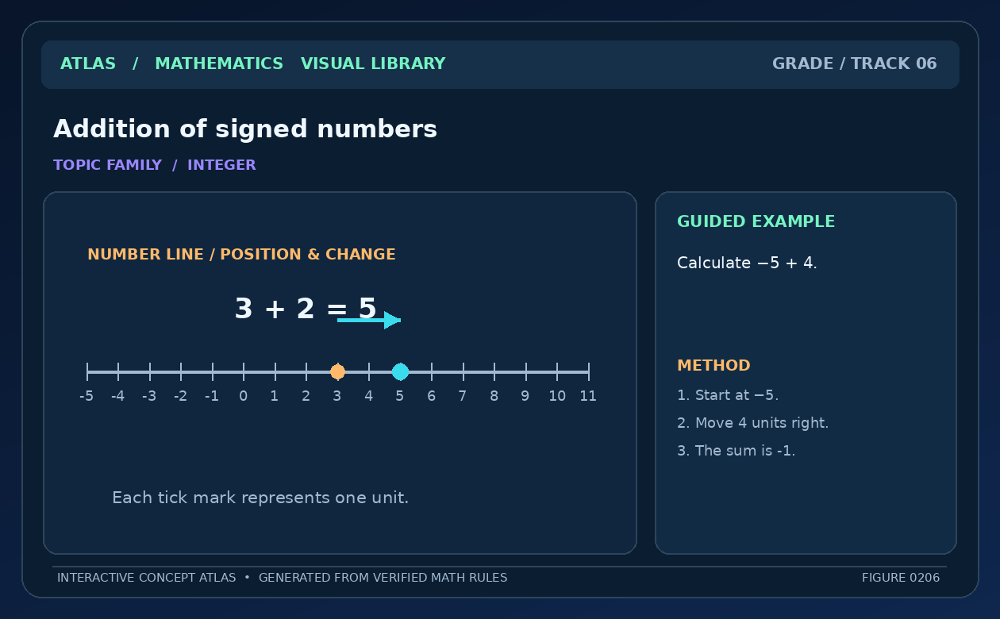
Calculate −5 + 4.
- Start at −5.
- Move 4 units right.
- The sum is -1.
Calculate −7 + 4.
Hint: Start at the negative number and move right.
Show answer and verify
-3
Check the units, inputs and intermediate steps. Different solution methods may be valid.
Subtraction of signed numbers
Subtraction of signed numbers: Use a signed number line and preserve sign rules when adding or multiplying. A negative product results from one positive and one negative factor.
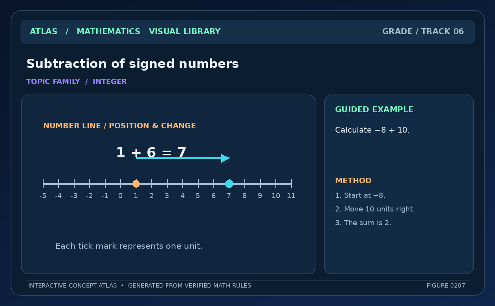
Calculate −8 + 10.
- Start at −8.
- Move 10 units right.
- The sum is 2.
Calculate −9 + 10.
Hint: Start at the negative number and move right.
Show answer and verify
1
Check the units, inputs and intermediate steps. Different solution methods may be valid.
Multiplication of signed numbers
Multiplication of signed numbers: Use a signed number line and preserve sign rules when adding or multiplying. A negative product results from one positive and one negative factor.
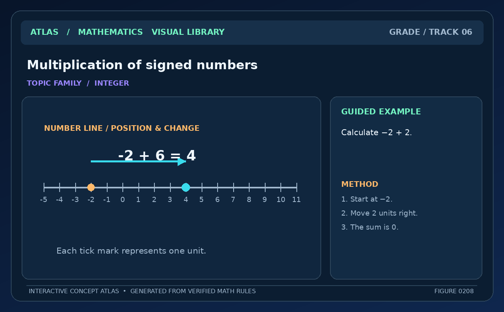
Calculate −2 + 2.
- Start at −2.
- Move 2 units right.
- The sum is 0.
Calculate −8 + 2.
Hint: Start at the negative number and move right.
Show answer and verify
-6
Check the units, inputs and intermediate steps. Different solution methods may be valid.
Division of signed numbers
Division of signed numbers: Use a signed number line and preserve sign rules when adding or multiplying. A negative product results from one positive and one negative factor.
Calculate −12 + 6.
- Start at −12.
- Move 6 units right.
- The sum is -6.
Calculate −17 + 6.
Hint: Start at the negative number and move right.
Show answer and verify
-11
Check the units, inputs and intermediate steps. Different solution methods may be valid.
Signed arithmetic in temperature
Signed arithmetic in temperature: Use a signed number line and preserve sign rules when adding or multiplying. A negative product results from one positive and one negative factor.
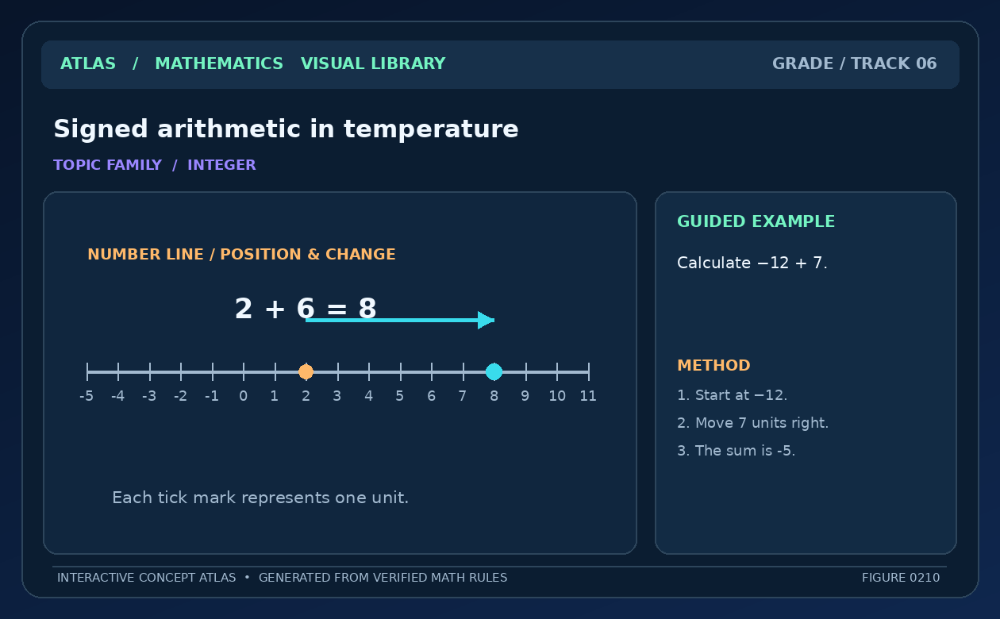
Calculate −12 + 7.
- Start at −12.
- Move 7 units right.
- The sum is -5.
Calculate −19 + 7.
Hint: Start at the negative number and move right.
Show answer and verify
-12
Check the units, inputs and intermediate steps. Different solution methods may be valid.
Comparing ratios
Comparing ratios: Keep the order of compared quantities and scale both parts by the same factor. Equivalent ratios represent the same proportional relationship.
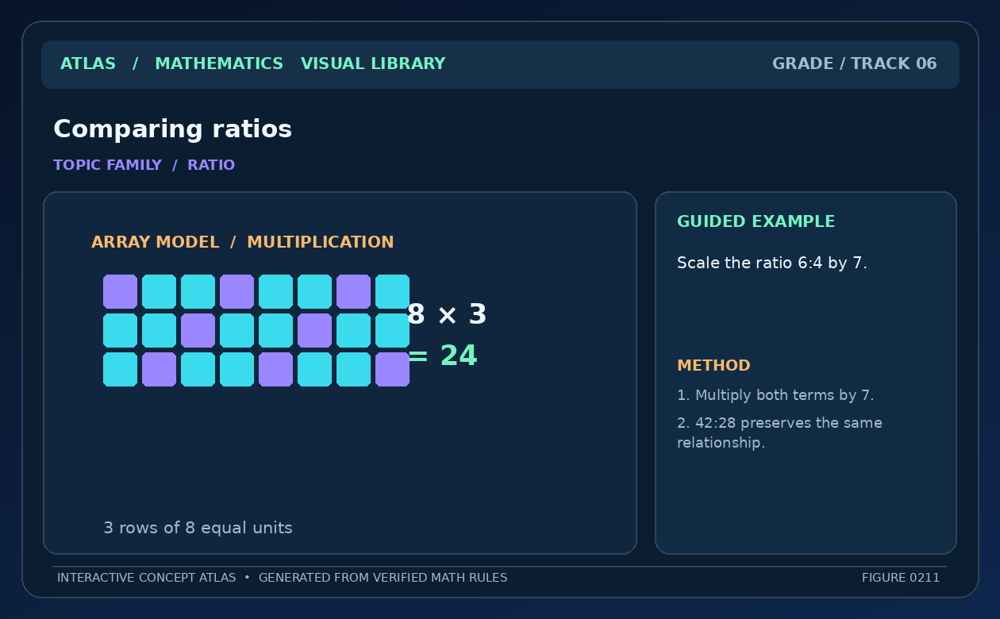
Scale the ratio 6:4 by 7.
- Multiply both terms by 7.
- 42:28 preserves the same relationship.
If 6:4 is scaled by 8, what is the first part?
Hint: Multiply both components by the same number.
Show answer and verify
48
Check the units, inputs and intermediate steps. Different solution methods may be valid.
Ratio tables
Ratio tables: Keep the order of compared quantities and scale both parts by the same factor. Equivalent ratios represent the same proportional relationship.
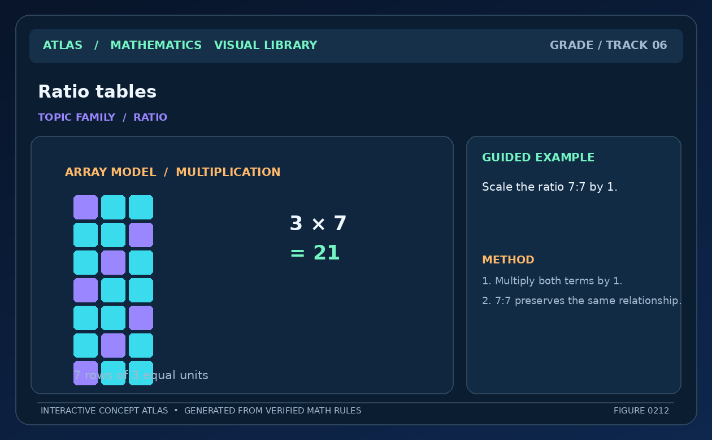
Scale the ratio 7:7 by 1.
- Multiply both terms by 1.
- 7:7 preserves the same relationship.
If 7:7 is scaled by 2, what is the first part?
Hint: Multiply both components by the same number.
Show answer and verify
14
Check the units, inputs and intermediate steps. Different solution methods may be valid.
Unit rates
Unit rates: Keep the order of compared quantities and scale both parts by the same factor. Equivalent ratios represent the same proportional relationship.
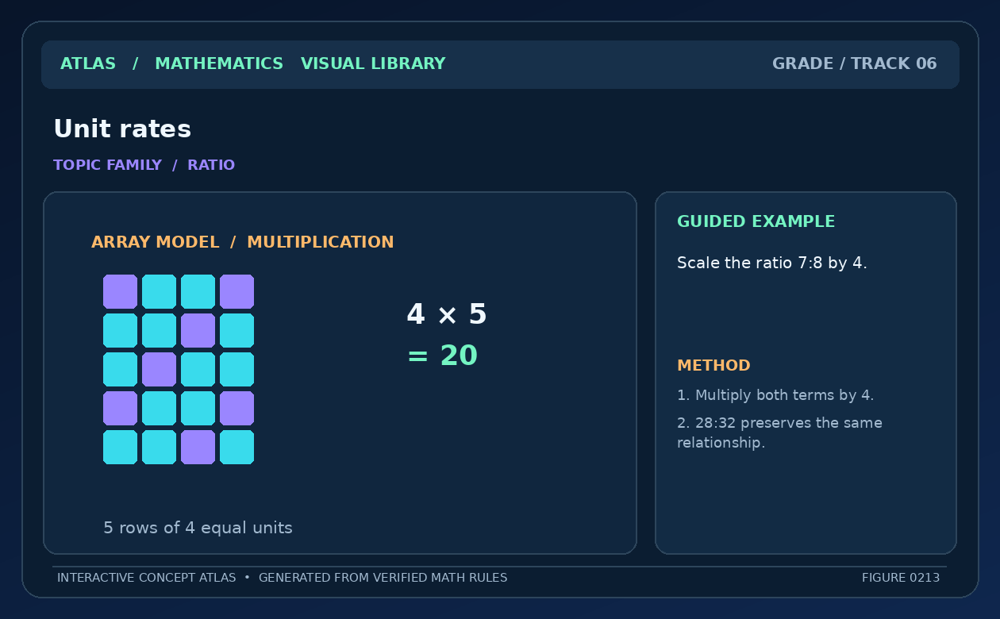
Scale the ratio 7:8 by 4.
- Multiply both terms by 4.
- 28:32 preserves the same relationship.
If 7:8 is scaled by 5, what is the first part?
Hint: Multiply both components by the same number.
Show answer and verify
35
Check the units, inputs and intermediate steps. Different solution methods may be valid.
Equivalent ratios
Equivalent ratios: Keep the order of compared quantities and scale both parts by the same factor. Equivalent ratios represent the same proportional relationship.
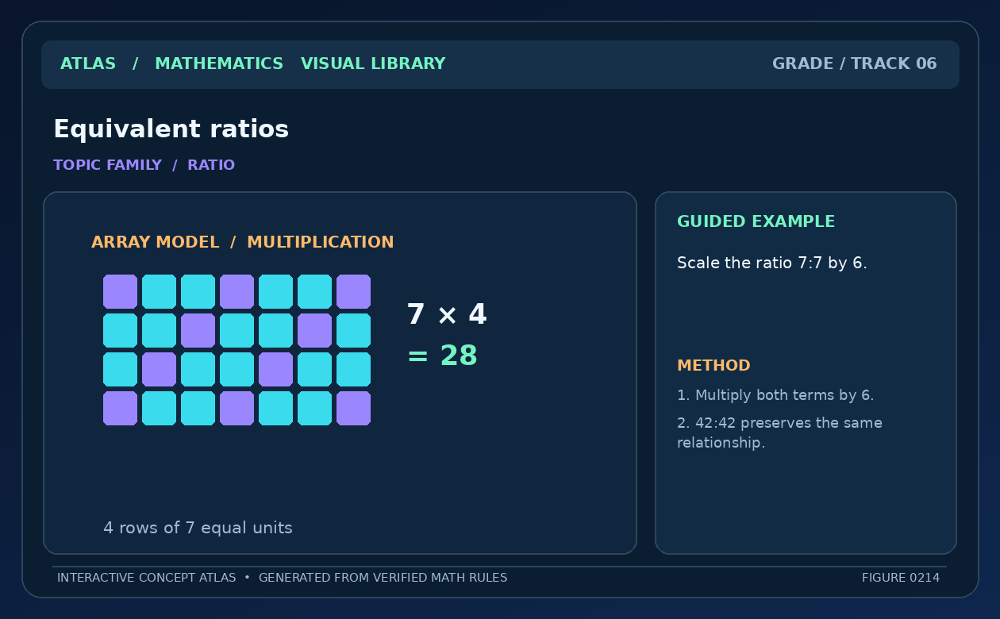
Scale the ratio 7:7 by 6.
- Multiply both terms by 6.
- 42:42 preserves the same relationship.
If 7:7 is scaled by 7, what is the first part?
Hint: Multiply both components by the same number.
Show answer and verify
49
Check the units, inputs and intermediate steps. Different solution methods may be valid.
Part-to-part and part-to-whole ratios
Part-to-part and part-to-whole ratios: Keep the order of compared quantities and scale both parts by the same factor. Equivalent ratios represent the same proportional relationship.
Scale the ratio 7:6 by 6.
- Multiply both terms by 6.
- 42:36 preserves the same relationship.
If 7:6 is scaled by 7, what is the first part?
Hint: Multiply both components by the same number.
Show answer and verify
49
Check the units, inputs and intermediate steps. Different solution methods may be valid.
Double number lines
Double number lines: Keep the order of compared quantities and scale both parts by the same factor. Equivalent ratios represent the same proportional relationship.
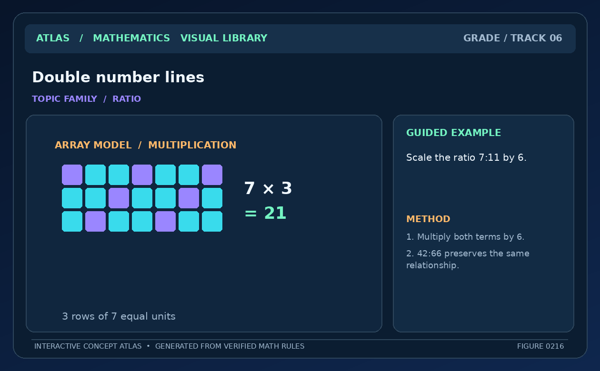
Scale the ratio 7:11 by 6.
- Multiply both terms by 6.
- 42:66 preserves the same relationship.
If 7:11 is scaled by 7, what is the first part?
Hint: Multiply both components by the same number.
Show answer and verify
49
Check the units, inputs and intermediate steps. Different solution methods may be valid.
Speed and unit rates
Speed and unit rates: Keep the order of compared quantities and scale both parts by the same factor. Equivalent ratios represent the same proportional relationship.
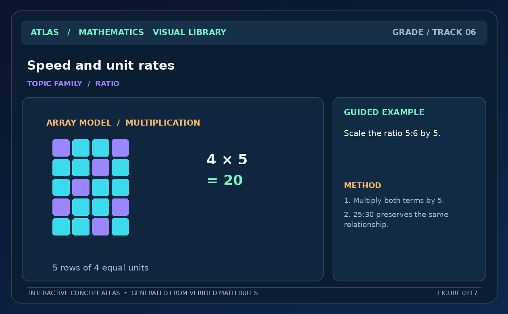
Scale the ratio 5:6 by 5.
- Multiply both terms by 5.
- 25:30 preserves the same relationship.
If 5:6 is scaled by 6, what is the first part?
Hint: Multiply both components by the same number.
Show answer and verify
30
Check the units, inputs and intermediate steps. Different solution methods may be valid.
Unit price comparisons
Unit price comparisons: Keep the order of compared quantities and scale both parts by the same factor. Equivalent ratios represent the same proportional relationship.
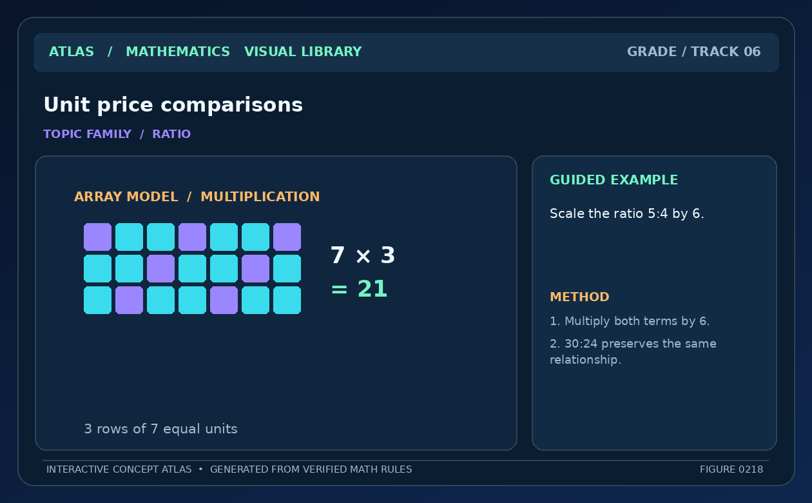
Scale the ratio 5:4 by 6.
- Multiply both terms by 6.
- 30:24 preserves the same relationship.
If 5:4 is scaled by 7, what is the first part?
Hint: Multiply both components by the same number.
Show answer and verify
35
Check the units, inputs and intermediate steps. Different solution methods may be valid.
Converting units with ratios
Converting units with ratios: Keep the order of compared quantities and scale both parts by the same factor. Equivalent ratios represent the same proportional relationship.
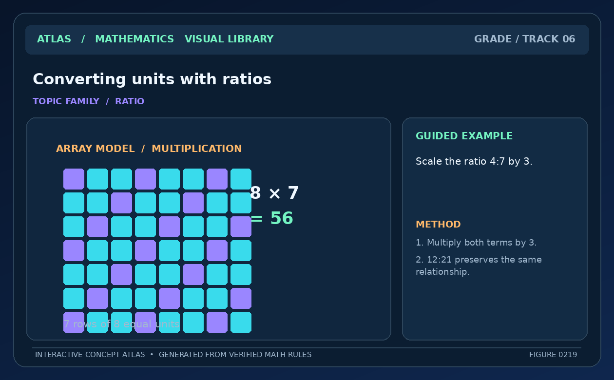
Scale the ratio 4:7 by 3.
- Multiply both terms by 3.
- 12:21 preserves the same relationship.
If 4:7 is scaled by 4, what is the first part?
Hint: Multiply both components by the same number.
Show answer and verify
16
Check the units, inputs and intermediate steps. Different solution methods may be valid.
Understanding percent
Understanding percent: Rewrite the percent as a decimal by dividing by 100, then multiply the baseline. The original amount is the reference when finding percent change.
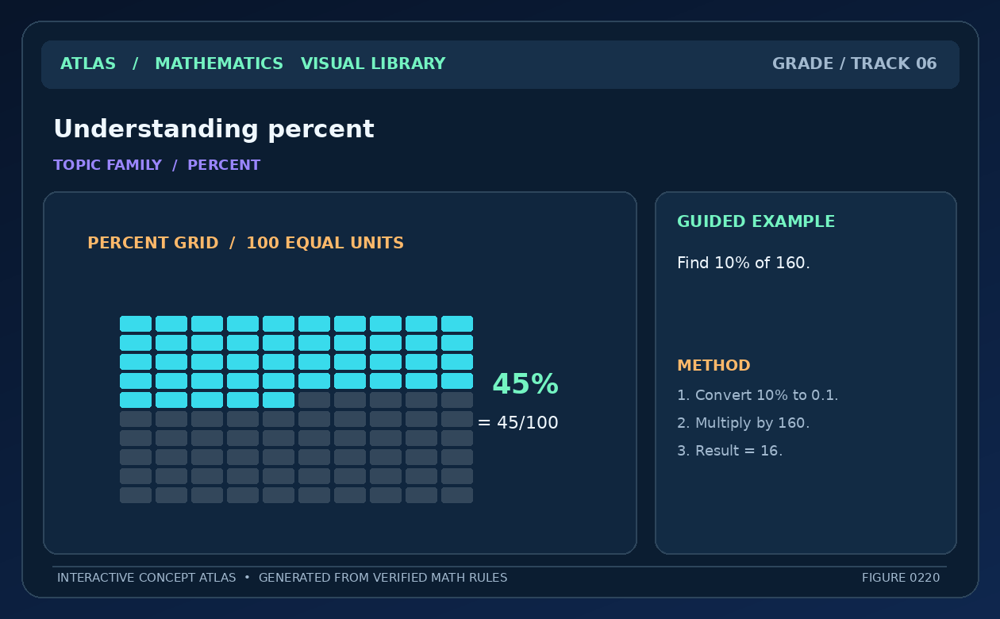
Find 10% of 160.
- Convert 10% to 0.1.
- Multiply by 160.
- Result = 16.
Find 40% of 40.
Hint: Percent means per one hundred.
Show answer and verify
16
Check the units, inputs and intermediate steps. Different solution methods may be valid.
Fractions decimals and percentages
Fractions decimals and percentages: Rewrite the percent as a decimal by dividing by 100, then multiply the baseline. The original amount is the reference when finding percent change.
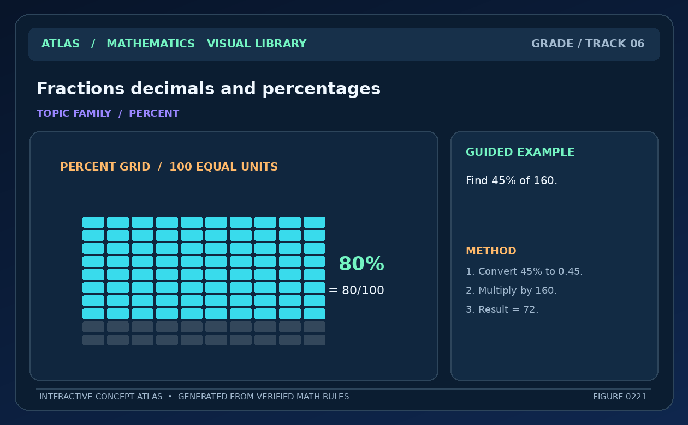
Find 45% of 160.
- Convert 45% to 0.45.
- Multiply by 160.
- Result = 72.
Find 40% of 180.
Hint: Percent means per one hundred.
Show answer and verify
72
Check the units, inputs and intermediate steps. Different solution methods may be valid.
Percent of a whole
Percent of a whole: Rewrite the percent as a decimal by dividing by 100, then multiply the baseline. The original amount is the reference when finding percent change.
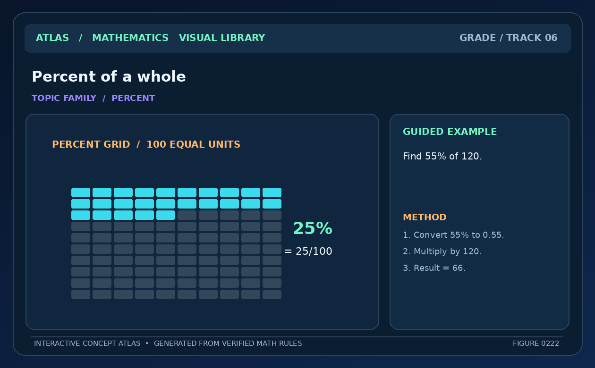
Find 55% of 120.
- Convert 55% to 0.55.
- Multiply by 120.
- Result = 66.
Find 30% of 220.
Hint: Percent means per one hundred.
Show answer and verify
66
Check the units, inputs and intermediate steps. Different solution methods may be valid.
Percent as proportional reasoning
Percent as proportional reasoning: Rewrite the percent as a decimal by dividing by 100, then multiply the baseline. The original amount is the reference when finding percent change.
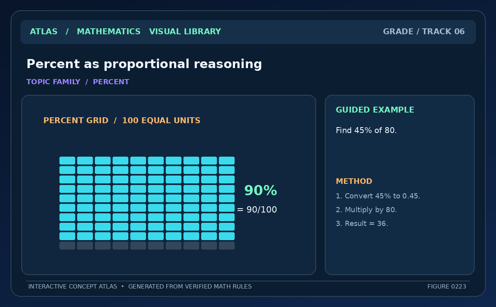
Find 45% of 80.
- Convert 45% to 0.45.
- Multiply by 80.
- Result = 36.
Find 20% of 180.
Hint: Percent means per one hundred.
Show answer and verify
36
Check the units, inputs and intermediate steps. Different solution methods may be valid.
Percent bar models
Percent bar models: Rewrite the percent as a decimal by dividing by 100, then multiply the baseline. The original amount is the reference when finding percent change.
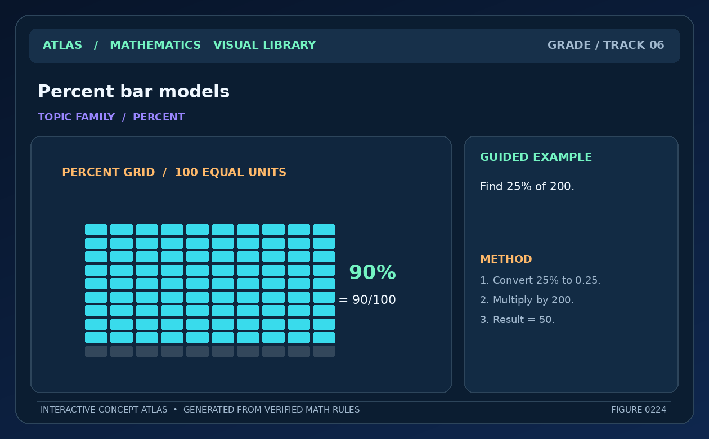
Find 25% of 200.
- Convert 25% to 0.25.
- Multiply by 200.
- Result = 50.
Find 50% of 100.
Hint: Percent means per one hundred.
Show answer and verify
50
Check the units, inputs and intermediate steps. Different solution methods may be valid.
Tax and tip introduction
Tax and tip introduction: Rewrite the percent as a decimal by dividing by 100, then multiply the baseline. The original amount is the reference when finding percent change.
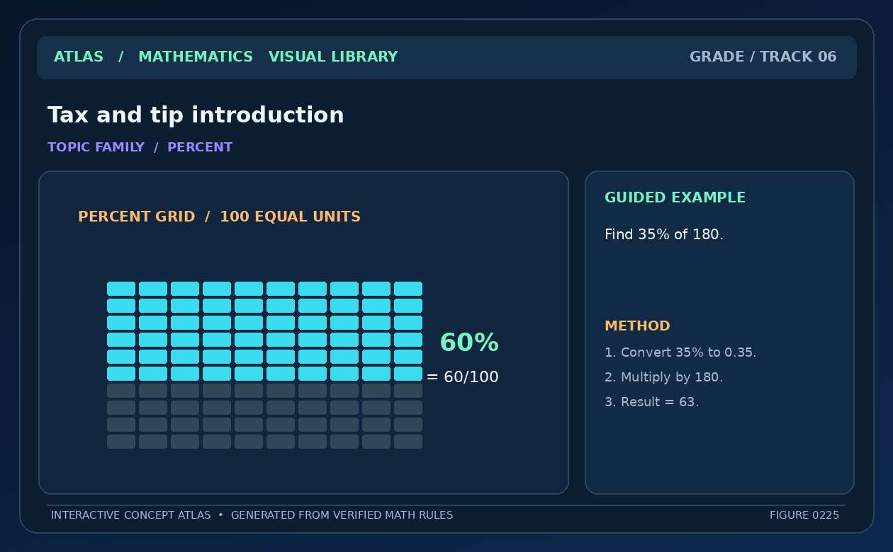
Find 35% of 180.
- Convert 35% to 0.35.
- Multiply by 180.
- Result = 63.
Find 45% of 140.
Hint: Percent means per one hundred.
Show answer and verify
63
Check the units, inputs and intermediate steps. Different solution methods may be valid.
Discount calculations
Discount calculations: Rewrite the percent as a decimal by dividing by 100, then multiply the baseline. The original amount is the reference when finding percent change.
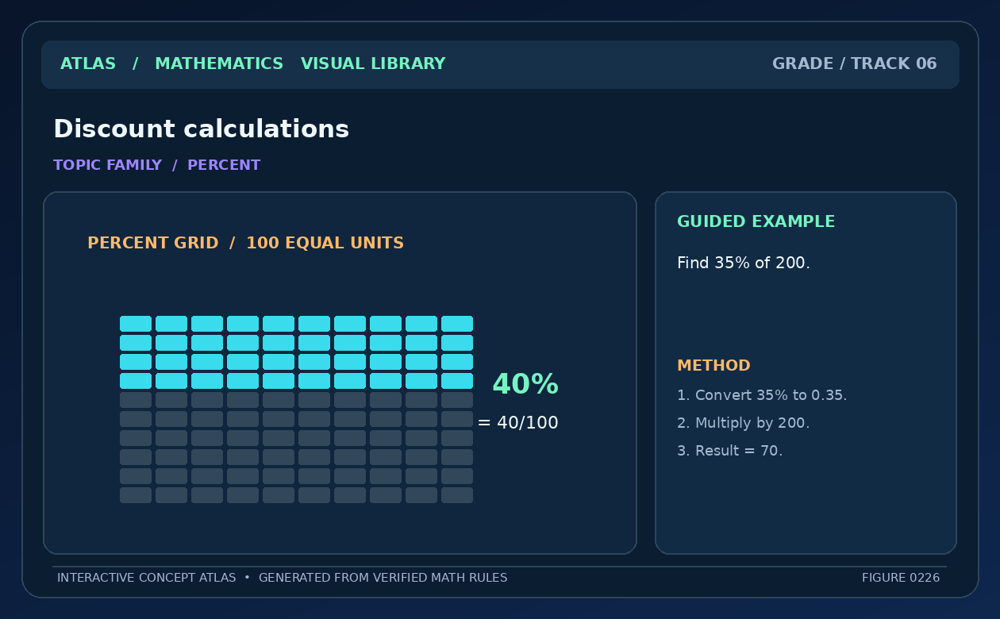
Find 35% of 200.
- Convert 35% to 0.35.
- Multiply by 200.
- Result = 70.
Find 50% of 140.
Hint: Percent means per one hundred.
Show answer and verify
70
Check the units, inputs and intermediate steps. Different solution methods may be valid.
Dividing fractions
Dividing fractions: Use the numerator for selected parts and denominator for equal pieces in the whole. Equivalent fractions are obtained by multiplying numerator and denominator by the same nonzero factor.
Find 6/9 of 9 objects.
- Divide total 9 by 9: each unit fraction is 1.
- Take 6 parts, obtaining 6.
Find 3/9 of 9 objects.
Hint: First find the value of one equal part.
Show answer and verify
3
Check the units, inputs and intermediate steps. Different solution methods may be valid.
Complex fractions
Complex fractions: Use the numerator for selected parts and denominator for equal pieces in the whole. Equivalent fractions are obtained by multiplying numerator and denominator by the same nonzero factor.
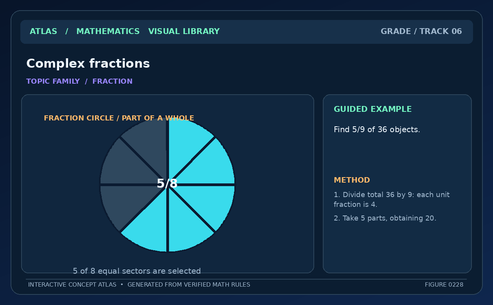
Find 5/9 of 36 objects.
- Divide total 36 by 9: each unit fraction is 4.
- Take 5 parts, obtaining 20.
Find 4/9 of 36 objects.
Hint: First find the value of one equal part.
Show answer and verify
16
Check the units, inputs and intermediate steps. Different solution methods may be valid.
Common-denominator reasoning
Common-denominator reasoning: Use the numerator for selected parts and denominator for equal pieces in the whole. Equivalent fractions are obtained by multiplying numerator and denominator by the same nonzero factor.
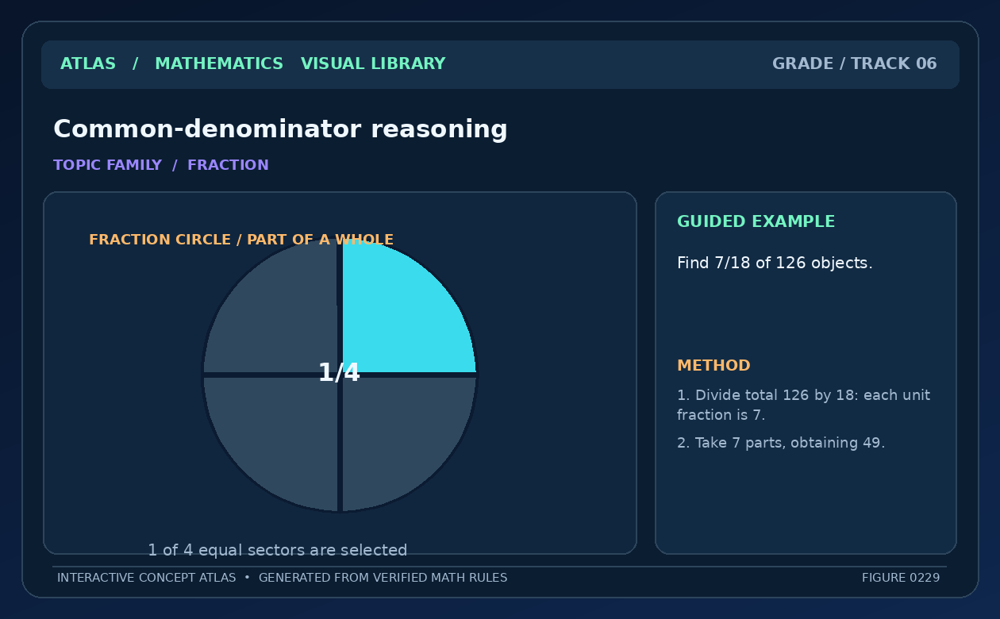
Find 7/18 of 126 objects.
- Divide total 126 by 18: each unit fraction is 7.
- Take 7 parts, obtaining 49.
Find 11/18 of 126 objects.
Hint: First find the value of one equal part.
Show answer and verify
77
Check the units, inputs and intermediate steps. Different solution methods may be valid.
Writing algebraic expressions
Writing algebraic expressions: Undo operations in reverse order and perform the same operation on both sides. An equation represents equality, so balanced transformations preserve its solution.
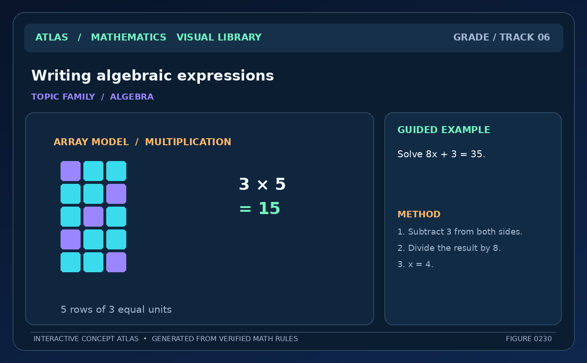
Solve 8x + 3 = 35.
- Subtract 3 from both sides.
- Divide the result by 8.
- x = 4.
Solve 3x + 8 = 26. Enter x.
Hint: Undo addition and then multiplication.
Show answer and verify
6
Check the units, inputs and intermediate steps. Different solution methods may be valid.
Combining like terms
Combining like terms: Undo operations in reverse order and perform the same operation on both sides. An equation represents equality, so balanced transformations preserve its solution.
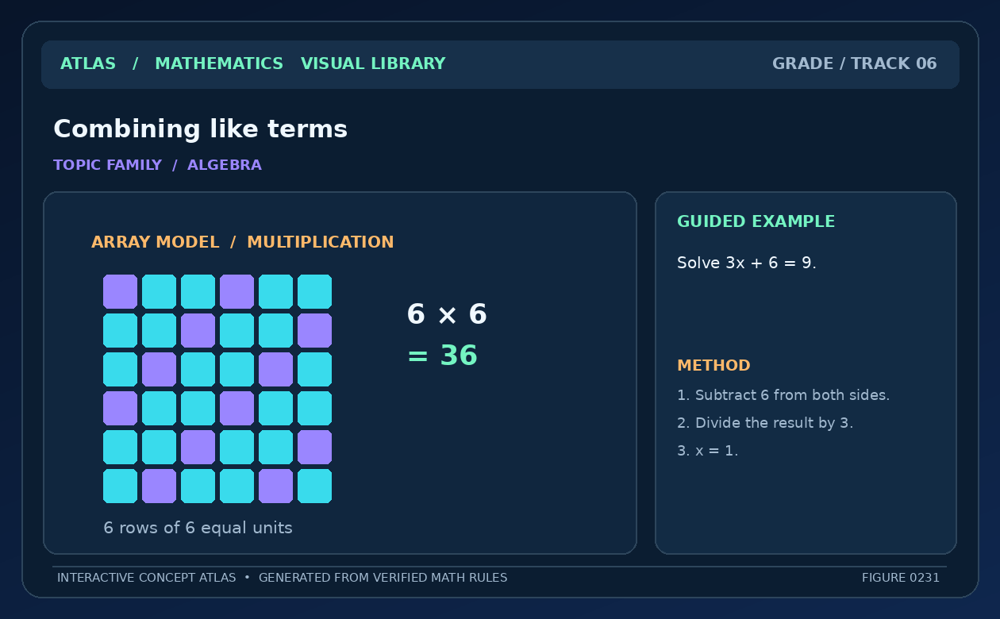
Solve 3x + 6 = 9.
- Subtract 6 from both sides.
- Divide the result by 3.
- x = 1.
Solve 6x + 3 = 21. Enter x.
Hint: Undo addition and then multiplication.
Show answer and verify
3
Check the units, inputs and intermediate steps. Different solution methods may be valid.
Distributive property of multiplication
Distributive property of multiplication: Undo operations in reverse order and perform the same operation on both sides. An equation represents equality, so balanced transformations preserve its solution.
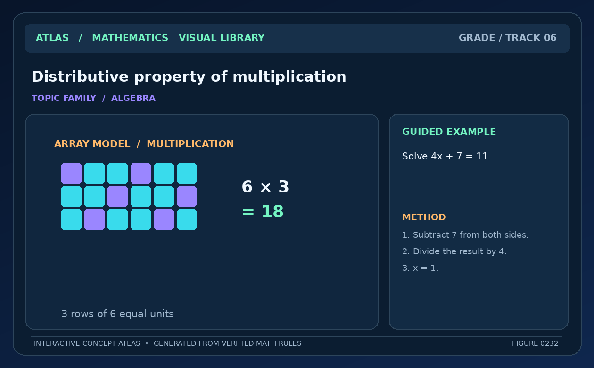
Solve 4x + 7 = 11.
- Subtract 7 from both sides.
- Divide the result by 4.
- x = 1.
Solve 7x + 4 = 25. Enter x.
Hint: Undo addition and then multiplication.
Show answer and verify
3
Check the units, inputs and intermediate steps. Different solution methods may be valid.
Substituting values
Substituting values: Undo operations in reverse order and perform the same operation on both sides. An equation represents equality, so balanced transformations preserve its solution.
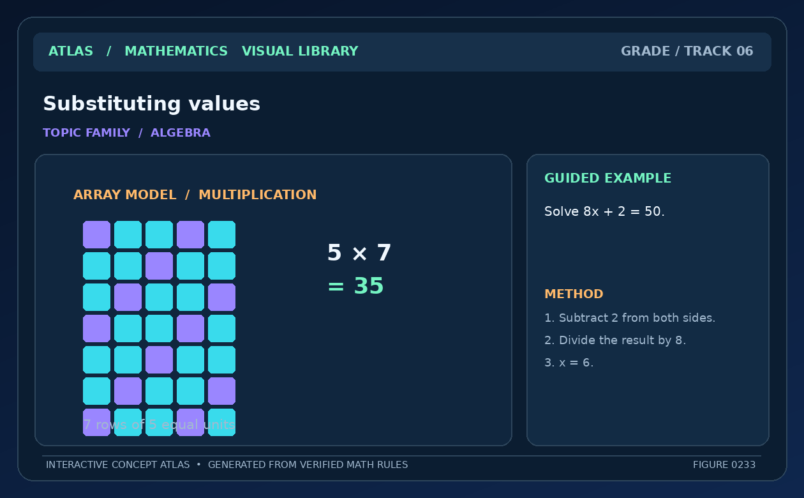
Solve 8x + 2 = 50.
- Subtract 2 from both sides.
- Divide the result by 8.
- x = 6.
Solve 2x + 8 = 24. Enter x.
Hint: Undo addition and then multiplication.
Show answer and verify
8
Check the units, inputs and intermediate steps. Different solution methods may be valid.
Simplifying linear expressions
Simplifying linear expressions: Undo operations in reverse order and perform the same operation on both sides. An equation represents equality, so balanced transformations preserve its solution.
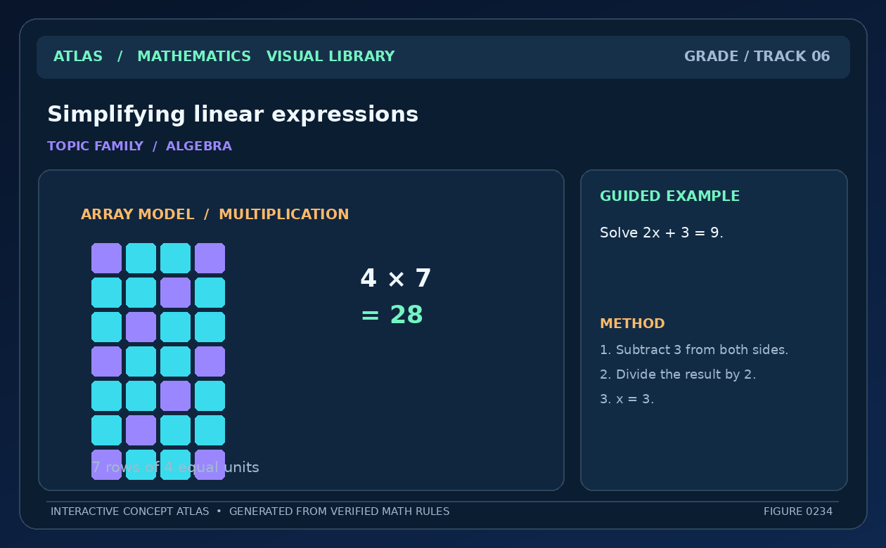
Solve 2x + 3 = 9.
- Subtract 3 from both sides.
- Divide the result by 2.
- x = 3.
Solve 3x + 2 = 17. Enter x.
Hint: Undo addition and then multiplication.
Show answer and verify
5
Check the units, inputs and intermediate steps. Different solution methods may be valid.
Inequality models
Inequality models: Undo operations in reverse order and perform the same operation on both sides. An equation represents equality, so balanced transformations preserve its solution.
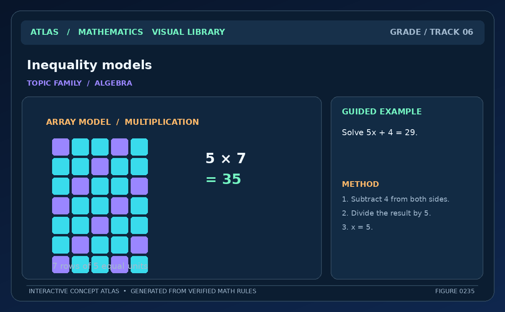
Solve 5x + 4 = 29.
- Subtract 4 from both sides.
- Divide the result by 5.
- x = 5.
Solve 4x + 5 = 33. Enter x.
Hint: Undo addition and then multiplication.
Show answer and verify
7
Check the units, inputs and intermediate steps. Different solution methods may be valid.
Solving one-variable equations
Solving one-variable equations: Undo operations in reverse order and perform the same operation on both sides. An equation represents equality, so balanced transformations preserve its solution.
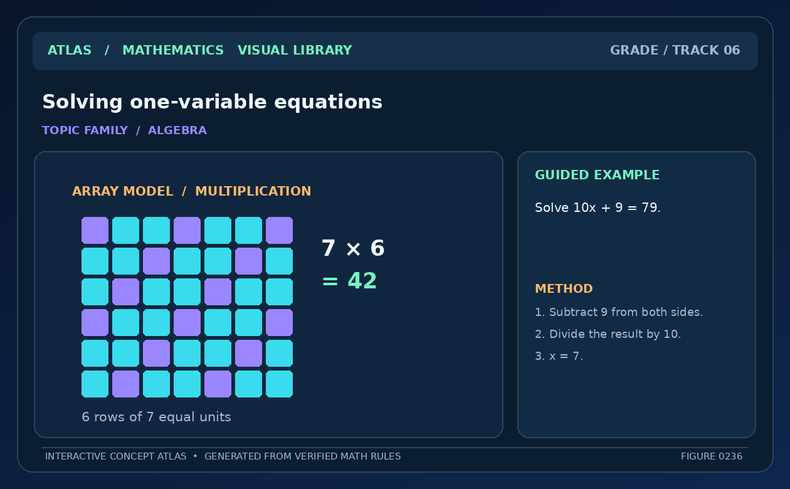
Solve 10x + 9 = 79.
- Subtract 9 from both sides.
- Divide the result by 10.
- x = 7.
Solve 9x + 10 = 91. Enter x.
Hint: Undo addition and then multiplication.
Show answer and verify
9
Check the units, inputs and intermediate steps. Different solution methods may be valid.
Finding missing angles
Finding missing angles: Sketch and label known lengths, angles and shape properties before calculating. A valid geometric argument uses definitions and established properties.
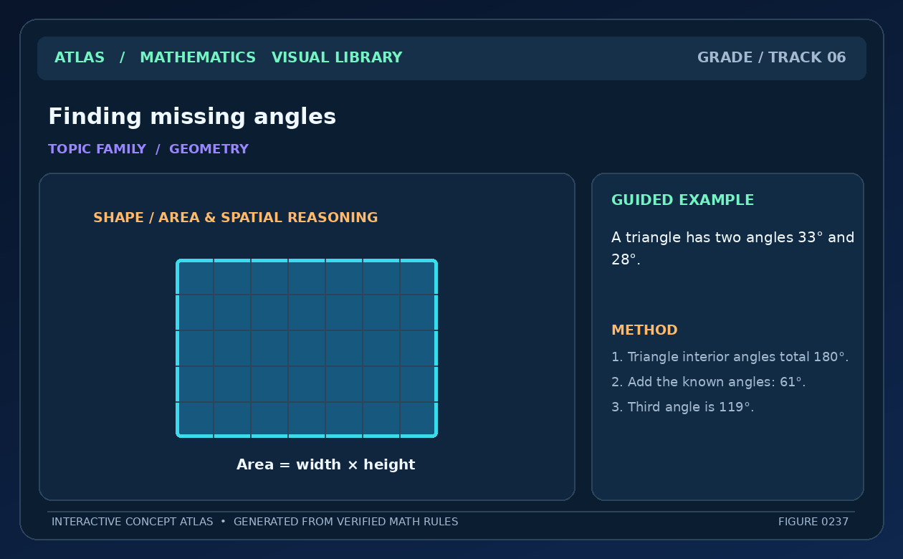
A triangle has two angles 33° and 28°.
- Triangle interior angles total 180°.
- Add the known angles: 61°.
- Third angle is 119°.
A triangle has angles 22° and 21°. Find the third.
Hint: Interior triangle angles sum to 180 degrees.
Show answer and verify
137
Check the units, inputs and intermediate steps. Different solution methods may be valid.
Triangles and angle sums
Triangles and angle sums: Sketch and label known lengths, angles and shape properties before calculating. A valid geometric argument uses definitions and established properties.
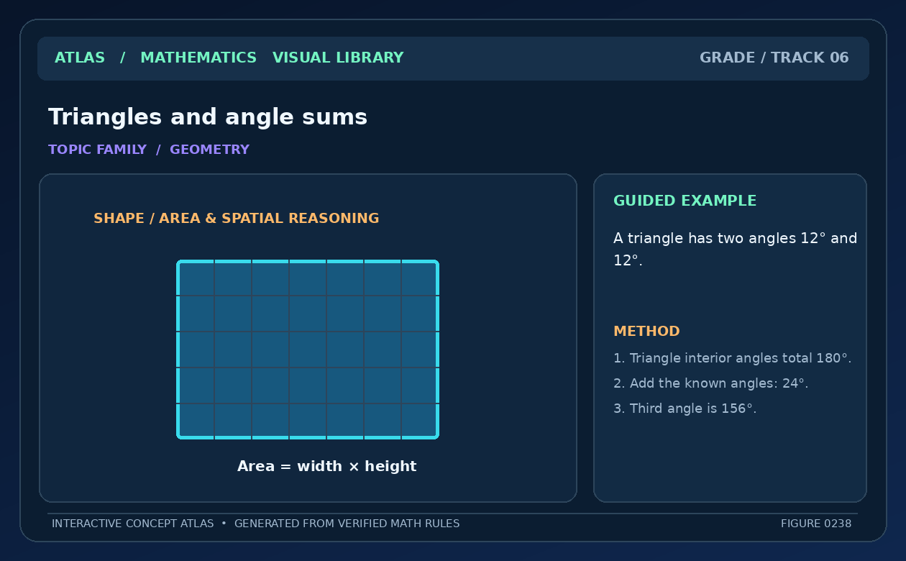
A triangle has two angles 12° and 12°.
- Triangle interior angles total 180°.
- Add the known angles: 24°.
- Third angle is 156°.
A triangle has angles 8° and 9°. Find the third.
Hint: Interior triangle angles sum to 180 degrees.
Show answer and verify
163
Check the units, inputs and intermediate steps. Different solution methods may be valid.
Coordinate plane with four quadrants
Coordinate plane with four quadrants: Sketch and label known lengths, angles and shape properties before calculating. A valid geometric argument uses definitions and established properties.
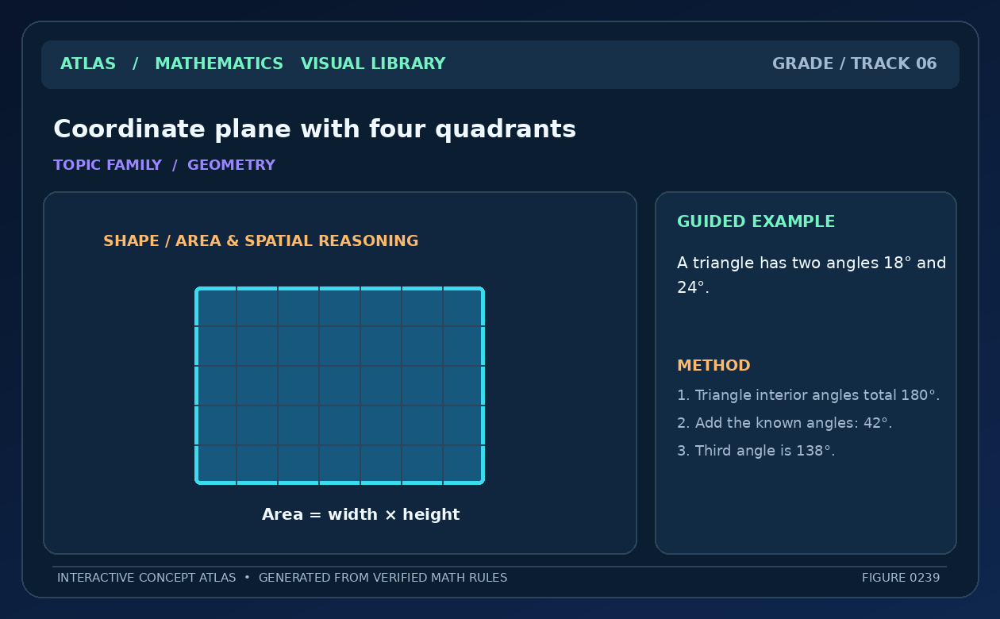
A triangle has two angles 18° and 24°.
- Triangle interior angles total 180°.
- Add the known angles: 42°.
- Third angle is 138°.
A triangle has angles 12° and 18°. Find the third.
Hint: Interior triangle angles sum to 180 degrees.
Show answer and verify
150
Check the units, inputs and intermediate steps. Different solution methods may be valid.
Areas of triangles
Areas of triangles: Decompose complicated regions into simpler shapes with known area formulas. Square units measure area; preserve the correct dimensions.
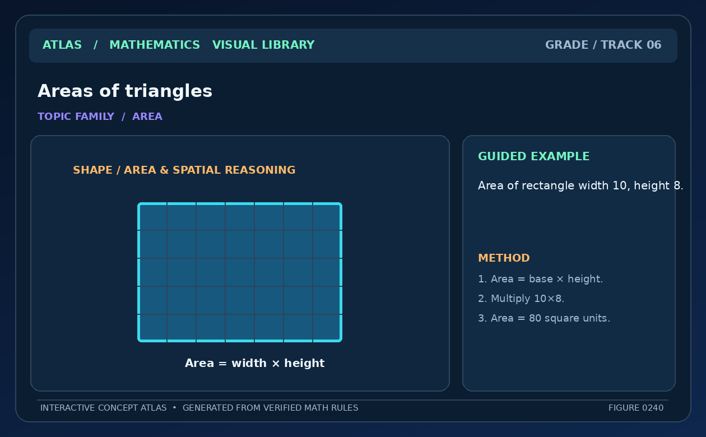
Area of rectangle width 10, height 8.
- Area = base × height.
- Multiply 10×8.
- Area = 80 square units.
Area of a rectangle 13 by 11?
Hint: Multiply both dimensions; use square units.
Show answer and verify
143
Check the units, inputs and intermediate steps. Different solution methods may be valid.
Areas of parallelograms
Areas of parallelograms: Decompose complicated regions into simpler shapes with known area formulas. Square units measure area; preserve the correct dimensions.
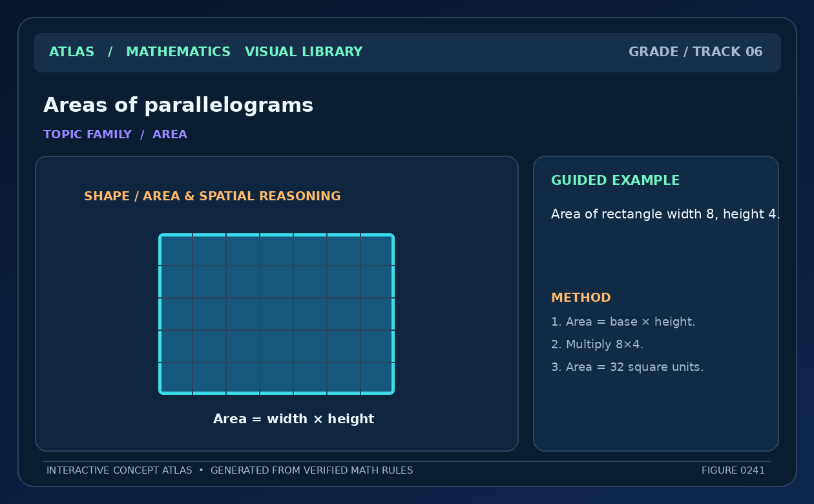
Area of rectangle width 8, height 4.
- Area = base × height.
- Multiply 8×4.
- Area = 32 square units.
Area of a rectangle 9 by 5?
Hint: Multiply both dimensions; use square units.
Show answer and verify
45
Check the units, inputs and intermediate steps. Different solution methods may be valid.
Area of irregular regions
Area of irregular regions: Decompose complicated regions into simpler shapes with known area formulas. Square units measure area; preserve the correct dimensions.
Area of rectangle width 10, height 7.
- Area = base × height.
- Multiply 10×7.
- Area = 70 square units.
Area of a rectangle 12 by 9?
Hint: Multiply both dimensions; use square units.
Show answer and verify
108
Check the units, inputs and intermediate steps. Different solution methods may be valid.
Median mode and mean
Median mode and mean: Organize observations and distinguish measures of center from measures of spread. The mean is the total divided by the number of observations.
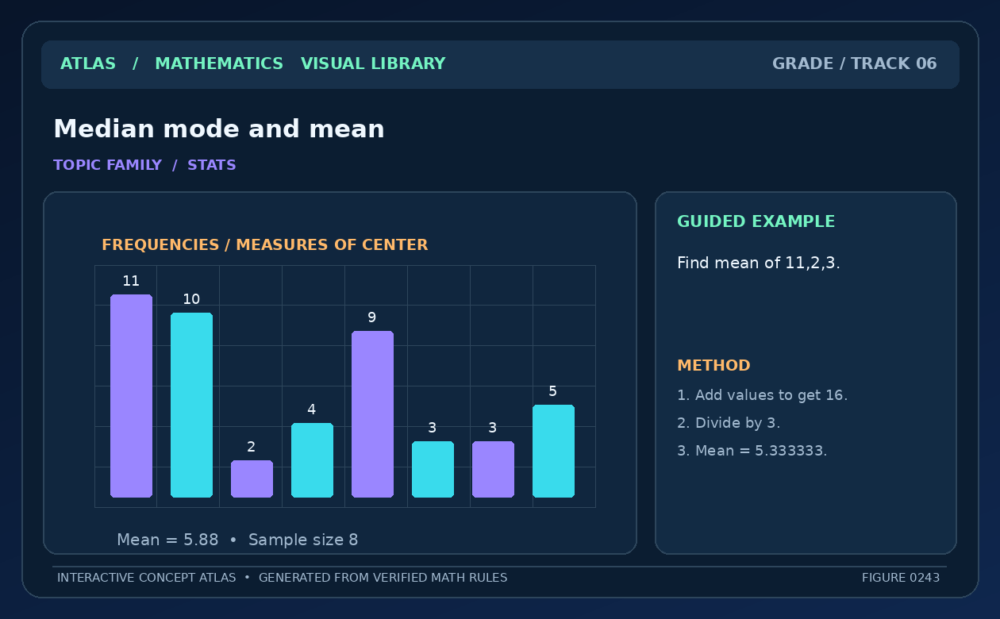
Find mean of 11,2,3.
- Add values to get 16.
- Divide by 3.
- Mean = 5.333333.
Mean of 11,13,15?
Hint: Sum observations and divide by count.
Show answer and verify
13
Check the units, inputs and intermediate steps. Different solution methods may be valid.
Interquartile range
Interquartile range: Organize observations and distinguish measures of center from measures of spread. The mean is the total divided by the number of observations.
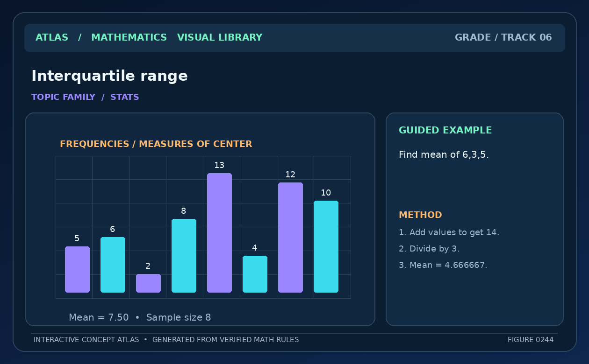
Find mean of 6,3,5.
- Add values to get 14.
- Divide by 3.
- Mean = 4.666667.
Mean of 6,8,10?
Hint: Sum observations and divide by count.
Show answer and verify
8
Check the units, inputs and intermediate steps. Different solution methods may be valid.
Data variability
Data variability: Organize observations and distinguish measures of center from measures of spread. The mean is the total divided by the number of observations.
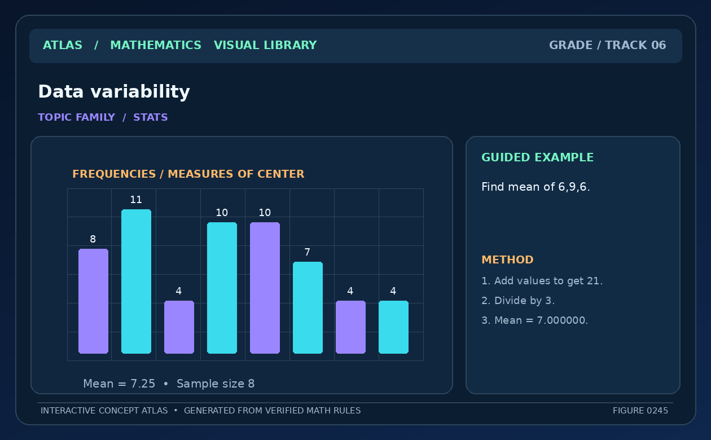
Find mean of 6,9,6.
- Add values to get 21.
- Divide by 3.
- Mean = 7.000000.
Mean of 6,8,10?
Hint: Sum observations and divide by count.
Show answer and verify
8
Check the units, inputs and intermediate steps. Different solution methods may be valid.
Dot plots and box plots
Dot plots and box plots: Organize observations and distinguish measures of center from measures of spread. The mean is the total divided by the number of observations.
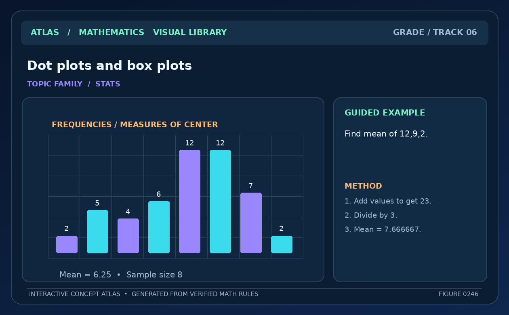
Find mean of 12,9,2.
- Add values to get 23.
- Divide by 3.
- Mean = 7.666667.
Mean of 12,14,16?
Hint: Sum observations and divide by count.
Show answer and verify
14
Check the units, inputs and intermediate steps. Different solution methods may be valid.
Experimental probability
Experimental probability: Write favorable outcomes over the total equally likely outcomes. A probability lies between zero and one, inclusive.
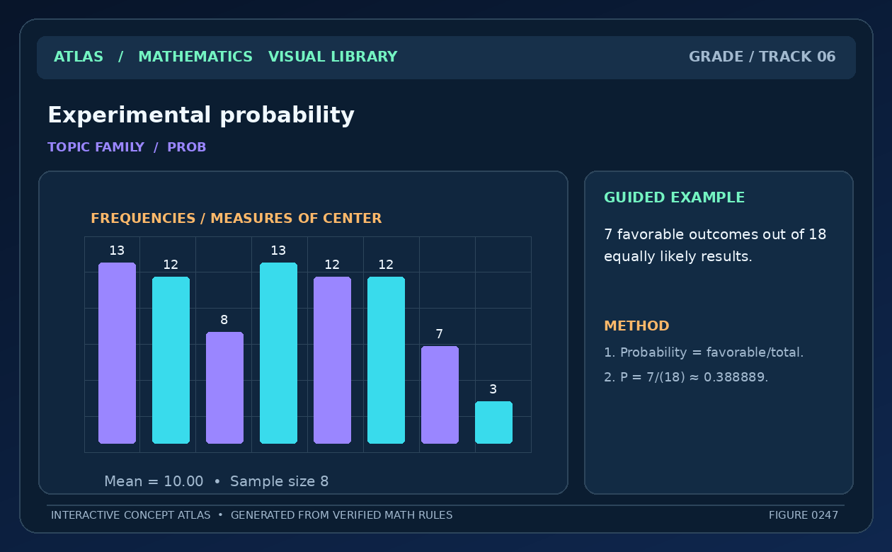
7 favorable outcomes out of 18 equally likely results.
- Probability = favorable/total.
- P = 7/(18) ≈ 0.388889.
11 favorable outcomes out of 18. Give a decimal.
Hint: Favorable divided by total outcomes.
Show answer and verify
0.6111111111111112
Check the units, inputs and intermediate steps. Different solution methods may be valid.
Theoretical probability
Theoretical probability: Write favorable outcomes over the total equally likely outcomes. A probability lies between zero and one, inclusive.
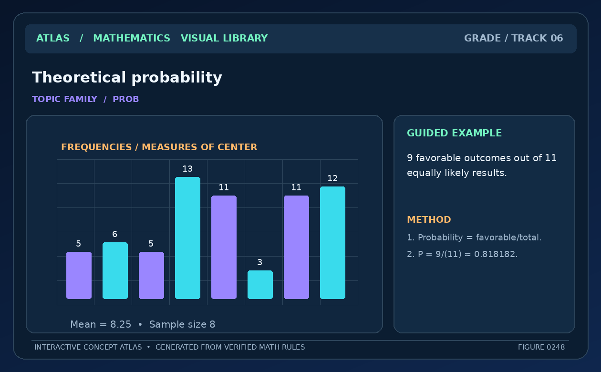
9 favorable outcomes out of 11 equally likely results.
- Probability = favorable/total.
- P = 9/(11) ≈ 0.818182.
2 favorable outcomes out of 11. Give a decimal.
Hint: Favorable divided by total outcomes.
Show answer and verify
0.18181818181818182
Check the units, inputs and intermediate steps. Different solution methods may be valid.
Sample spaces
Sample spaces: Write favorable outcomes over the total equally likely outcomes. A probability lies between zero and one, inclusive.
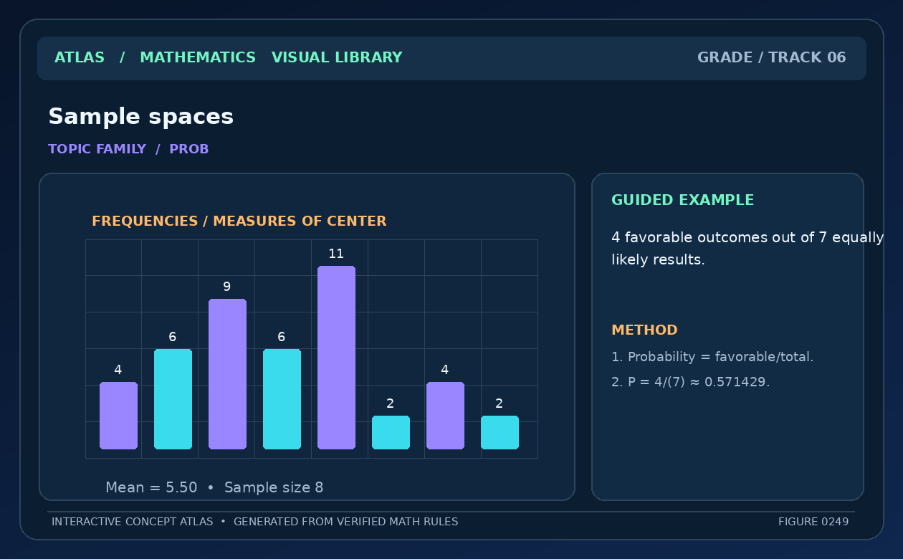
4 favorable outcomes out of 7 equally likely results.
- Probability = favorable/total.
- P = 4/(7) ≈ 0.571429.
3 favorable outcomes out of 7. Give a decimal.
Hint: Favorable divided by total outcomes.
Show answer and verify
0.42857142857142855
Check the units, inputs and intermediate steps. Different solution methods may be valid.
Introductory savings interest
Introductory savings interest: Convert a percentage to a decimal and write down the compounding period before computing. A loan APR and an investment APY are not automatically interchangeable.
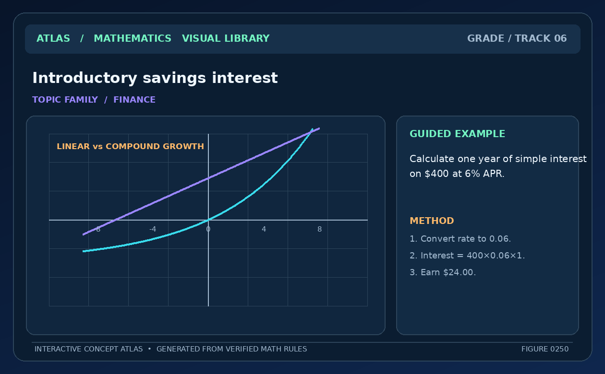
Calculate one year of simple interest on $400 at 6% APR.
- Convert rate to 0.06.
- Interest = 400×0.06×1.
- Earn $24.00.
Interest on $1000 at 6% for one year?
Hint: Simple interest is principal × annual rate × time.
Show answer and verify
60
Check the units, inputs and intermediate steps. Different solution methods may be valid.
Comparing discount options
Comparing discount options: Convert a percentage to a decimal and write down the compounding period before computing. A loan APR and an investment APY are not automatically interchangeable.
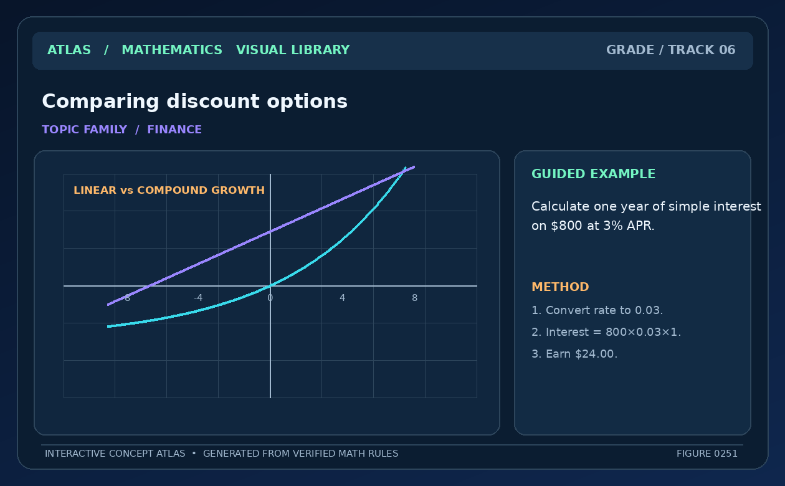
Calculate one year of simple interest on $800 at 3% APR.
- Convert rate to 0.03.
- Interest = 800×0.03×1.
- Earn $24.00.
Interest on $200 at 3% for one year?
Hint: Simple interest is principal × annual rate × time.
Show answer and verify
6
Check the units, inputs and intermediate steps. Different solution methods may be valid.